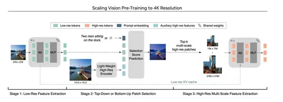

Большинство доступных визуальных энкодеров предобучено на изображениях низкого разрешения: например, на 378✕378, как SigLIP. Это становится серьёзной проблемой, если вы хотите обрабатывать изображения высокого разрешения с мелкими деталями. Дорожный знак STOP будет неразличим, если сжать кадры записи видеорегистратора до 378✕378. То же касается распознавания текста, где много мелких деталей.
Авторы сегодняшней статьи отмечают, что в индустрии уже борются с этой проблемой. Методом AnyRes режут большое изображение на части поменьше — тайлы без пересечений. Или, как в S2, одновременно ресайзят изображение до нужного размера и делят его оригинал на тайлы, чтобы добавить каналы для описания одних и тех же участков изображения в более высоком разрешении. Но эти методы кодируют картинку заранее — не учитывая запрос пользователя. Логично предположить, что для вопроса, например, про одежду человека, не нужно кодировать автомобили и здания.
Новое решение, которое предлагают авторы сегодняшней статьи, учитывает промпты пользователя. Они предлагают подбирать куски изображения, которые подходят под запрос, и подмешивать их в инпут. Сделать это можно в два шага:
1. предобучить энкодер PS3, который сможет угадывать подходящие области изображения;
2. обучить VLM отвечать на запросы пользователя вместе c энкодером PS3.
А если промпта нет и top-down-selection невозможен, можно подключить bottom-up-selection: попросить нейросеть самостоятельно выбрать интересные области. «Интересность» при этом определяется данными, на которых обучалась модель.
Архитектура PS3 изображена на схеме. На входе — предобученный SigLIP. Энкодим им изображение и получаем low-res-фичи. Из-за ресайза теряются все высокоуровневые фичи. Авторы предлагают исправить это с помощью дополнительного так называемого light-weight-high-res-энкодера (обучаемая урезанная CNN). Третьей фичой будет либо эмбеддинг текста, чтобы выбрать интересный образ, либо обучаемый эмбеддинг, который заменит промпт. По этой тройке для каждой позиции предсказывается вероятность её релевантности: вырезают топ-K областей и энкодят через SigLIP (несколько раз в разных разрешениях).
Итоговые фичи картинки — исходные low-res и вырезанные топ-K областей. Чтобы подключить PS3 к VLM, понадобится LLM: достаточно передать последний токен из запроса к ней в PS3. Отобрав топ выученных с энкодом позиционных эмбеддов, можно переходить к тренировке language modeling.
Для эффективного обучения VLM вместе с PS3 нужно дотюнить выбор региона, чтобы подмена не ощущалась. А дальше можно тренировать модель как обычно.
Модель, которая получилась после подключения PS3 к мультимодальной LLM, авторы назвали VILA-HD. По их замерам, она значительно превосходит по качеству AnyRes и S2, используя при этом в 4,3 раза меньше токенов.
Разбор подготовил
CV Time
